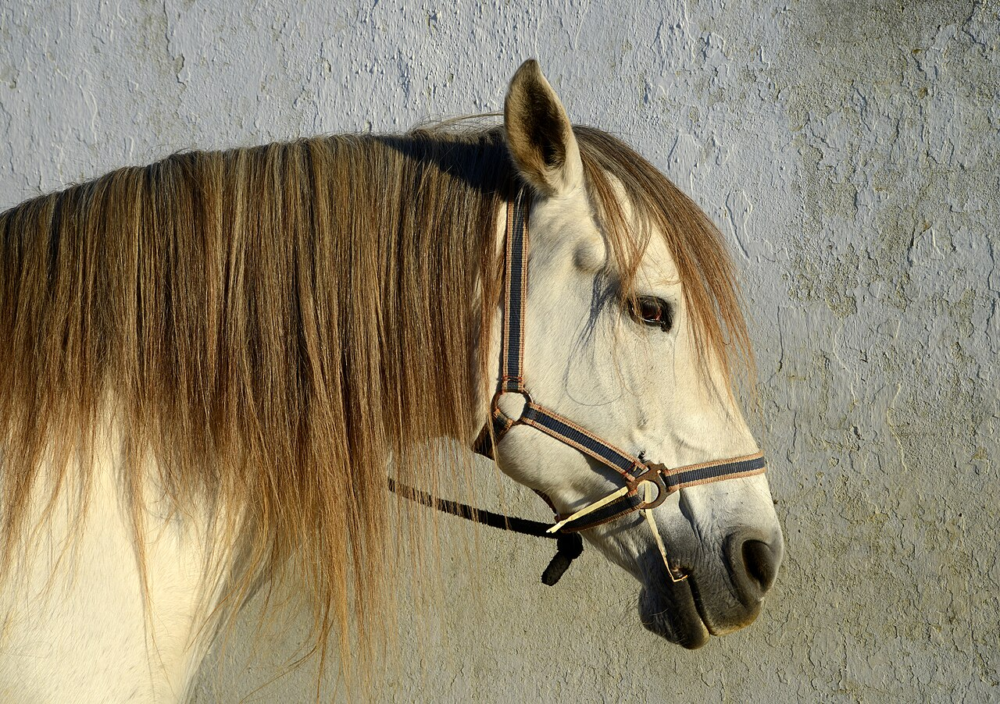
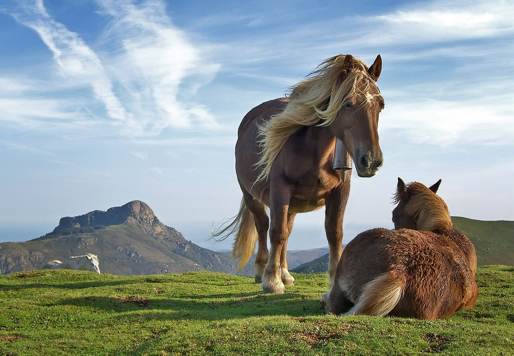

Het paard is een van de oudste huisdieren van de mens. Paarden leven van nature in kuddes en worden wereldwijd gebruikt als rijdier, lastdier en gezelschapsdier.
Er bestaan honderden paardenrassen, van grote werkpaarden tot kleine pony's. Hieronder zie je twee voorbeelden: een Lusitano-paard en twee Pottok-pony's.

